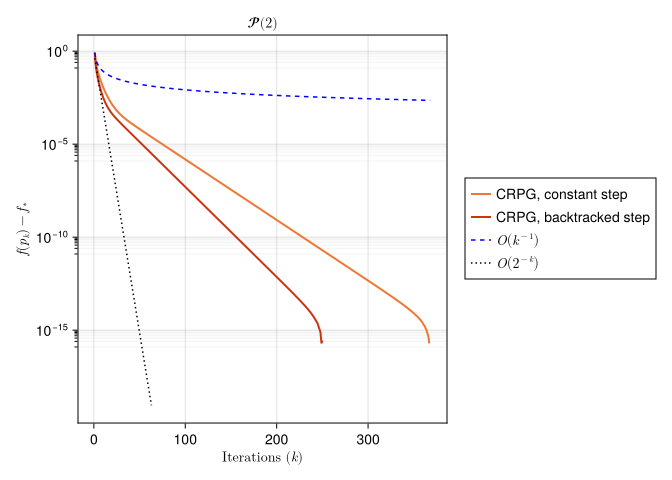

A Geodesically Convex Example on SPDs
Hajg Jasa 2025-04-16
Introduction
In this example we compare the Convex Riemannian Proximal Gradient (CRPG) method [BJJP25a] with the Cyclic Proximal Point Algorithm, which was introduced in [Bac14], on the space of symmetric positive definite matrices. This example reproduces the results from [BJJP25a], Section 5.3.
using PrettyTables
using BenchmarkTools
using CSV, DataFrames
using ColorSchemes, Plots, LaTeXStrings, CairoMakie, Chairmarks
using Random, LinearAlgebra, LRUCache
using ManifoldDiff, Manifolds, Manopt, ManoptExamples
import ColorSchemes.tol_vibrantThe Problem
Let $\mathcal M = \mathcal H^2$ be the $2$-dimensional hyperbolic space.
Let $g \colon \mathcal M \to \mathbb R$ be defined by
\[g(p) = \log(\det(p))^4.\]
Observe that the function $g$ is geodesically convex with respect to the Riemannian metric on $\mathcal M$.
Let now $q_1$ be a given point, and let $h \colon \mathcal M \to \mathbb R$ be defined by
\[h(p) = \tau \mathrm{dist}(p, q_1),\]
for some $\tau > 0$. We define our total objective function as $f = g + h$. Notice that this objective function is also geodesically convex with respect to the Riemannian metric on $\mathcal M$. The goal is to find the minimizer of $f$ on $\mathcal M$.
Numerical Experiment
We initialize the experiment parameters, as well as some utility functions.
random_seed = 42
atol = 1e-7
max_iters = 20000
τ = 1/2 # weight for the component h
spd_dims = [2, 3, 4, 5]# Objective, gradient, and proxes
g(M, p) = log(det(p))^4
grad_g(M, p) = 4log(det(p))^3 * p
#
h(M, p, q) = τ * distance(M, p, q)
prox_h(M, λ, p, q) = ManifoldDiff.prox_distance(M, τ * λ, q, p, 1)
#
f(M, p, q) = g(M, p) + h(M, p, q)
# Function to generate points close to the given point p
function close_point(M, p, tol; retraction_method=Manifolds.default_retraction_method(M, typeof(p)))
X = rand(M; vector_at = p)
X .= tol * rand() * X / norm(M, p, X)
return retract(M, p, X, retraction_method)
end
# Estimate Lipschitz constant of the gradient of g
function theoretical_lipschitz_constant(M, anchor, n, R=D, N=100_000)
constants = []
for i in 1:N
p = close_point(M, anchor, R)
push!(constants, 12 * n * log(det(p))^2)
end
return maximum(constants)
endWe introduce some keyword arguments for the solvers we will use in this experiment
# Solver arguments for backtracking
pgm_kwargs(contraction_factor, initial_stepsize, warm_start_factor) = [
:record => [:Iteration, :Cost, :Iterate],
:return_state => true,
:stepsize => ProximalGradientMethodBacktracking(;
contraction_factor=contraction_factor,
strategy=:convex,
initial_stepsize=initial_stepsize,
stop_when_stepsize_less=atol,
warm_start_factor=warm_start_factor,
),
:stopping_criterion => StopWhenAny(
StopWhenGradientMappingNormLess(atol), StopAfterIteration(max_iters)
),
]
pgm_bm_kwargs(contraction_factor, initial_stepsize, warm_start_factor) = [
:record => [:Iteration, :Cost, :Iterate],
:return_state => true,
:stepsize => ProximalGradientMethodBacktracking(;
contraction_factor=contraction_factor,
strategy=:convex,
initial_stepsize=initial_stepsize,
stop_when_stepsize_less=atol,
warm_start_factor=warm_start_factor,
),
:stopping_criterion => StopWhenAny(
StopWhenGradientMappingNormLess(atol), StopAfterIteration(max_iters)
),
]
# Solver arguments for constant stepsize
pgm_kwargs_constant(stepsize) = [
:record => [:Iteration, :Cost, :Iterate],
:return_state => true,
:stepsize => ConstantLength(stepsize),
:stopping_criterion => StopWhenAny(
StopWhenGradientMappingNormLess(atol), StopAfterIteration(max_iters)
),
]
pgm_bm_kwargs_constant(stepsize) = [
:record => [:Iteration, :Cost, :Iterate],
:return_state => true,
:stepsize => ConstantLength(stepsize),
:stopping_criterion => StopWhenAny(
StopWhenGradientMappingNormLess(atol), StopAfterIteration(max_iters)
),
]Before running the experiments, we initialize data collection functions that we will use later
# Header for the dataframe
global col_names_1 = [
:Dimension,
:Iterations_1,
:Time_1,
:Cost_1,
:Iterations_2,
:Time_2,
:Cost_2,
]
col_types_1 = [
Int64,
Int64,
Float64,
Float64,
Int64,
Float64,
Float64,
]
named_tuple_1 = (; zip(col_names_1, type[] for type in col_types_1 )...)
# Function for initializing the dataframe
function initialize_dataframes(
results_folder,
experiment_name,
named_tuple_1,
)
A1 = DataFrame(named_tuple_1)
CSV.write(
joinpath(
results_folder,
experiment_name *
"-Comparisons.csv",
),
A1;
header=false,
)
return A1
endfunction export_dataframes(
M,
records,
times,
)
B1 = DataFrame(;
Dimension=manifold_dimension(M),
Iterations_1=maximum(first.(records[1])),
Time_1=times[1],
Cost_1=minimum([r[2] for r in records[1]]),
Iterations_2=maximum(first.(records[2])),
Time_2=times[2],
Cost_2=minimum([r[2] for r in records[2]]),
)
return B1
end
function write_dataframes(
B1,
results_folder,
experiment_name,
)
CSV.write(
joinpath(
results_folder,
experiment_name *
"-Comparisons.csv",
),
B1;
append=true,
)
endglobal A1_SPD = initialize_dataframes(
results_folder,
experiment_name,
named_tuple_1,
)
stats = Dict(:CRPG_CN => Dict(), :CRPG_BT => Dict())
for n in spd_dims
Random.seed!(random_seed)
M = SymmetricPositiveDefinite(Int(n))
q = rand(M)
p0 = rand(M)
prox_h_spd(M, λ, p) = prox_h(M, λ, p, q)
f_spd(M, p) = f(M, p, q)
D = 4*distance(M, p0, q)
# Conseravative estimate of the Lipschitz constant for grad_g
L_g = 1.05 * theoretical_lipschitz_constant(M, p0, n, D/2)
constant_stepsize = 1/L_g
initial_stepsize = 3/2 * constant_stepsize
contraction_factor = 0.9
warm_start_factor = 2.0
# Optimization
pgm_constant = proximal_gradient_method(M, f_spd, g, grad_g, p0;
prox_nonsmooth=prox_h_spd,
pgm_bm_kwargs_constant(constant_stepsize)...
)
pgm_constant_result = get_solver_result(pgm_constant)
pgm_constant_record = get_record(pgm_constant)
stats[:CRPG_CN][n] = Dict()
stats[:CRPG_CN][n][:Iteration] = length(get_record(pgm_constant, :Iteration)) + 1
stats[:CRPG_CN][n][:Cost] = get_record(pgm_constant, :Iteration, :Cost)
pushfirst!(stats[:CRPG_CN][n][:Cost], f_spd(M, p0))
# We can also use a backtracked stepsize
pgm = proximal_gradient_method(M, f_spd, g, grad_g, p0;
prox_nonsmooth=prox_h_spd,
pgm_kwargs(contraction_factor, initial_stepsize, warm_start_factor)...
)
pgm_result = get_solver_result(pgm)
pgm_record = get_record(pgm)
stats[:CRPG_BT][n] = Dict()
stats[:CRPG_BT][n][:Iteration] = length(get_record(pgm, :Iteration)) + 1
stats[:CRPG_BT][n][:Cost] = get_record(pgm, :Iteration, :Cost)
pushfirst!(stats[:CRPG_BT][n][:Cost], f_spd(M, p0))
records = [
pgm_constant_record,
pgm_record,
]
# Benchmarking
if benchmarking
pgm_constant_bm = @benchmark proximal_gradient_method($M, $f_spd, $g, $grad_g, $p0;
prox_nonsmooth=$prox_h_spd,
$pgm_bm_kwargs_constant($constant_stepsize)...
)
pgm_bm = @benchmark proximal_gradient_method($M, $f_spd, $g, $grad_g, $p0;
prox_nonsmooth=$prox_h_spd,
$pgm_bm_kwargs($contraction_factor, $initial_stepsize, $warm_start_factor)...
)
times = [
median(pgm_constant_bm).time * 1e-9,
median(pgm_bm).time * 1e-9,
]
# Export the results
B1 = export_dataframes(
M,
records,
times,
)
append!(A1_SPD, B1)
(export_table) && (write_dataframes(B1, results_folder, experiment_name))
end
endWe can take a look at how the algorithms compare to each other in their performance with the following table, where columns 2 to 4 relate to CRPG with a constant stepsize, while columns 5 to 7 refer to the backtracked case…
| Dimension | Iterations_1 | Time_1 | Cost_1 | Iterations_2 | Time_2 | Cost_2 |
|---|---|---|---|---|---|---|
| 3 | 367 | 0.00415113 | 0.18593 | 250 | 0.00888871 | 0.18593 |
| 6 | 1944 | 0.0439392 | 0.27078 | 1313 | 0.0795954 | 0.27078 |
| 10 | 8640 | 0.272177 | 0.371274 | 5878 | 0.522786 | 0.371274 |
| 15 | 15535 | 0.618404 | 0.449625 | 12937 | 3.06766 | 0.449625 |
Lastly, we showcase the rate of decay of the function values for $n = 2$.
function plot_convergence(
stats,
dimensions=[2],
)
# Extract the results for the specified dimensions
crpg_cn = [stats[:CRPG_CN][d] for d in dimensions]
crpg_bt = [stats[:CRPG_BT][d] for d in dimensions]
figs = Vector{Figure}()
for i in 1:length(crpg_cn)
# Get the solvers' results and records
# crpg_cn_result = crpg_cn[i][:Result]
crpg_cn_record = crpg_cn[i][:Cost]
# crpg_bt_result = crpg_bt[i][:Result]
crpg_bt_record = crpg_bt[i][:Cost]
# Calculate the minimum cost for relative error
min_cost_crpg_cn = minimum(crpg_cn_record)
min_cost_crpg_bt = minimum(crpg_bt_record)
# Create vectors for plotting
iterations_crpg_cn = 1:crpg_cn[i][:Iteration]
iterations_crpg_bt = 1:crpg_bt[i][:Iteration]
# Get initial error for scaling reference lines
relative_errors_crpg_cn = max.(crpg_cn_record .- min_cost_crpg_cn, 0)
initial_error_crpg_cn = relative_errors_crpg_cn[1]
relative_errors_crpg_bt = max.(crpg_bt_record .- min_cost_crpg_bt, 0)
initial_error_crpg_bt = relative_errors_crpg_bt[1]
initial_error = max(
initial_error_crpg_cn,
initial_error_crpg_bt,
)
iterations = max(
iterations_crpg_cn,
iterations_crpg_bt,
)
# Create reference trajectories
# O(1/k)
ref_rate_1 = [initial_error/k for k in iterations]
# O(1/2^k)
ref_rate_2k = [initial_error/2^k for k in iterations]
# Create the convergence plot
fig = Figure()
ax = Axis(fig[1, 1],
title =L"\mathcal{P}(%$(dimensions[i]))",
xlabel =L"\text{Iterations }(k)",
ylabel =L"f(p_k) - f_*",
# xscale=log10,
yscale=log10,
yminorticksvisible = true,
yminorgridvisible = true,
yminorticks = IntervalsBetween(8),
)
lines!(
ax,
iterations_crpg_cn,
abs.(relative_errors_crpg_cn);
label="CRPG, constant step",
linewidth=2,
color=tol_vibrant[1],
)
lines!(
ax,
iterations_crpg_bt,
abs.(relative_errors_crpg_bt);
label="CRPG, backtracked step",
linewidth=2,
color=tol_vibrant[5],
)
lines!(
ax,
iterations,
abs.(ref_rate_1);
linestyle=:dash,
linewidth=1.5,
color=:blue,
label=L"\mathcal O\left(k^{-1}\right)"
)
lines!(
ax,
iterations,
abs.(ref_rate_2k);
linestyle=:dot,
linewidth=1.5,
color=:black,
label=L"\mathcal O\left(2^{-k}\right)"
)
fig[1, 2] = Legend(fig, ax, framevisible = true)
fig
push!(figs, fig)
end
return figs
end
figs = plot_convergence(stats)for fig in figs
display(fig)
end
This is in line with the convergence rates of the CRPG method in the geodesically convex setting, as shown in [BJJP25a], Theorem 4.7.
Technical details
This tutorial is cached. It was last run on the following package versions.
using Pkg
Pkg.status()Status `~/Repositories/Julia/ManoptExamples.jl/examples/Project.toml`
[6e4b80f9] BenchmarkTools v1.6.0
[336ed68f] CSV v0.10.15
[13f3f980] CairoMakie v0.15.3
[0ca39b1e] Chairmarks v1.3.1
[35d6a980] ColorSchemes v3.30.0
⌅ [5ae59095] Colors v0.12.11
[a93c6f00] DataFrames v1.7.0
[7073ff75] IJulia v1.29.0
[682c06a0] JSON v0.21.4
[8ac3fa9e] LRUCache v1.6.2
[b964fa9f] LaTeXStrings v1.4.0
[d3d80556] LineSearches v7.4.0
[ee78f7c6] Makie v0.24.3
[af67fdf4] ManifoldDiff v0.4.4
[1cead3c2] Manifolds v0.10.22
[3362f125] ManifoldsBase v1.2.0
[0fc0a36d] Manopt v0.5.20
[5b8d5e80] ManoptExamples v0.1.14 `..`
[51fcb6bd] NamedColors v0.2.3
⌃ [91a5bcdd] Plots v1.40.16
[08abe8d2] PrettyTables v2.4.0
⌃ [6099a3de] PythonCall v0.9.25
[f468eda6] QuadraticModels v0.9.13
[1e40b3f8] RipQP v0.7.0
Info Packages marked with ⌃ and ⌅ have new versions available. Those with ⌃ may be upgradable, but those with ⌅ are restricted by compatibility constraints from upgrading. To see why use `status --outdated`This tutorial was last rendered July 16, 2025, 16:47:53.
Literature
- [Bac14]
- M. Bačák. Computing medians and means in Hadamard spaces. SIAM Journal on Optimization 24, 1542–1566 (2014), arXiv:1210.2145.
- [BJJP25a]
- R. Bergmann, H. Jasa, P. J. John and M. Pfeffer. The Intrinsic Riemannian Proximal Gradient Method for Convex Optimization, preprint (2025), arXiv:2507.16055.